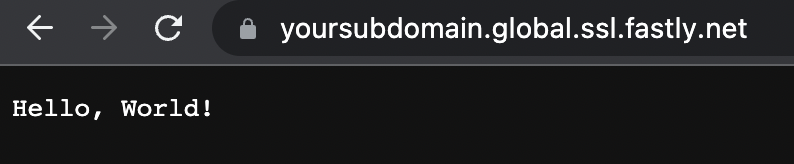
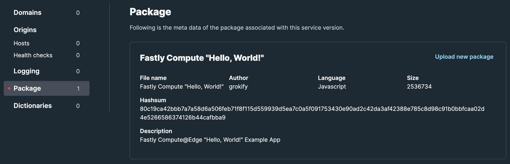
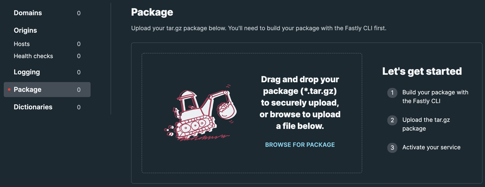
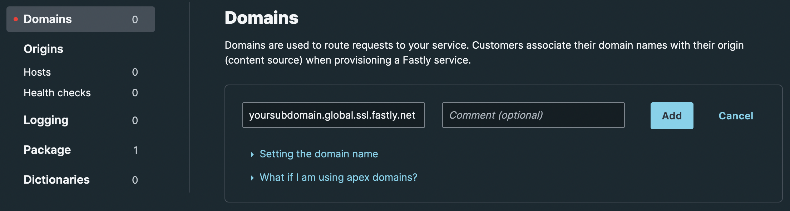
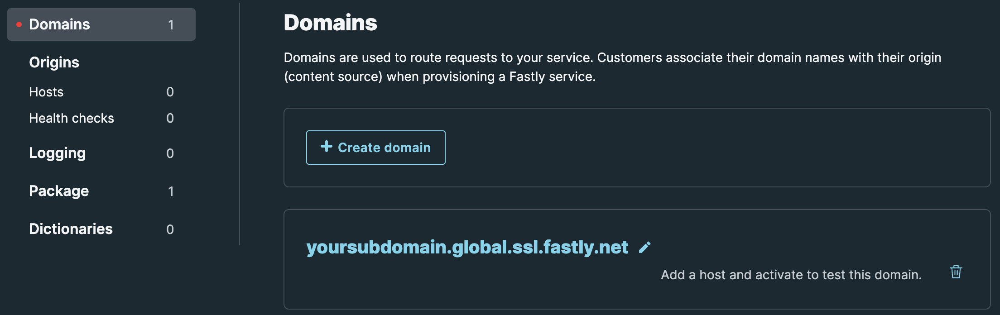

Compute@Edge Quickstart for JavaScript
TL/DR
To create a simple "Hello, World!" example, use the Fastly CLI to create an empty project and then modify the src/index.js file to emit "Hello, World!" instead of "OK".
There are a number of files deployed as part of this process, but they key files are the fastly.toml file and the src/index.js file.
This is described quickly here along with the CLI commands, and in more detail below.
Once you complete this quickstart, see the tutorial and SDK reference for more info along with additional examples and starter kits
# This file describes a Fastly Compute@Edge package. To learn more visit:
# https://developer.fastly.com/reference/fastly-toml/
authors = ["grokify"]
description = "Fastly Compute@Edge \"Hello, World!\" Example App"
language = "javascript"
manifest_version = 2
name = "Fastly Compute \"Hello, World!\""
service_id = ""
At the end of this quickstart, you will see the following in your browser where "yoursubdomain" should be one of your choosing.

To use your own domain, see the section on Domains and TLS
Prerequisites
Creating the Empty Project Scaffold
Note: the output in this program is from "Fastly CLI version v2.0.3 (112d60b) Built with go version go1.18.2 linux/amd64". Get the CLI by following the instructions on the Fastly CLI page.
On macOS, use the following:
% brew install fastly/tap/fastly
Commands
Output
% fastly compute init
Creating a new Compute@Edge project.
Press ^C at any time to quit.
Name: [fastly-compute-hello-world-js-2] Fastly Compute "Hello, World!"
Description: Fastly Compute@Edge "Hello, World!" Example App
Author: grokify
Language:
[1] Rust
[2] JavaScript
[3] AssemblyScript (beta)
[4] Other ('bring your own' Wasm binary)
Choose option: [1] 2
Starter kit:
[1] Default starter for JavaScript
A basic starter kit that demonstrates routing, simple synthetic responses and
overriding caching rules.
https://github.com/fastly/compute-starter-kit-javascript-default
[2] Empty starter for JavaScript
An empty application template for the Fastly Compute@Edge environment which simply
returns a 200 OK response.
https://github.com/fastly/compute-starter-kit-javascript-empty
Choose option or paste git URL: [1] 2
✓ Initializing...
✓ Fetching package template...
✓ Updating package manifest...
✓ Initializing package...
Initialized package Fastly Compute "Hello, World!" to:
/Users/johnwang/go/src/github.com/grokify/fastly-compute-hello-world-js-2
To publish the package (build and deploy), run:
fastly compute publish
To learn about deploying Compute@Edge projects using third-party orchestration tools, visit:
https://developer.fastly.com/learning/integrations/orchestration/
SUCCESS: Initialized package Fastly Compute "Hello, World!"
This results in the following list of 5921 files and directories generated from a tar -tf. The vast majority of these are in the node_modules directory which isn't needed for our "Hello, World!" program.
fastly-compute-hello-world-js.init.contents.txt
The top level directory files are as follows without listing out all the files under node_modules.
.gitignore
README.md
fastly.toml
node_modules/*
npm-shrinkwrap.json
package.json
src/index.js
webpack.config.js
Of note, .gitignore omits the node_modules directory along with bin and pkg which haven't been created yet.
Fastly.toml
The fastly.toml file looks like the following. You can add your Service ID here or add it later outside of this file for more deployment flexibility. This tutorial will supply the Service ID as a Fastly CLI command parameter below.
# This file describes a Fastly Compute@Edge package. To learn more visit:
# https://developer.fastly.com/reference/fastly-toml/
authors = ["grokify"]
description = "Fastly Compute@Edge \"Hello, World!\" Example App"
language = "javascript"
manifest_version = 2
name = "Fastly Compute \"Hello, World!\""
service_id = ""
Writing the Code
The starter file is in the src/index.js location which has the following content:
/// <reference types="@fastly/js-compute" />
addEventListener("fetch", (event) => event.respondWith(handleRequest(event)));
async function handleRequest(event) {
return new Response("OK", { status: 200 });
}
Hello, World!
To start, let's just modify the "OK" text to say "Hello, World!" as such:
/// <reference types="@fastly/js-compute" />
addEventListener("fetch", (event) => event.respondWith(handleRequest(event)));
async function handleRequest(event) {
return new Response("Hello, World!", { status: 200 });
}
The response can be enhanced with a Content-Type header as follows:
async function handleRequest(event) {
return new Response("Hello, World!", {
status: 200,
headers: new Headers({ "Content-Type": "text/html;charset=utf-8" }),
});
}
Further Reading on Code
See the following resources for more on writing Edge code in JavaScript:
Uploading the Package
Using the CLI
Specifying Your API Token
Before you upload the file, you will need to get a Fastly API token. You can create one from the Fastly Management Console by following the instructions on the tokens page.
A token is an alpha-numeric string that looks like the following:
DRYzDkfSjieSDji82ie90830ehf02fDH
You can use the token several ways:
- Via the Fastly CLI parameter
--token - Via the environment variable
FASTLY_API_TOKEN - Via the Fastly CLI profile using the commands from
% fastly profile --help
For this Quickstart, we'll set the token using the environment variable such as following on macOS:
Publishing the Code
Fastly CLI has a number of commands to build and deploy the code. The following is an excerpt of the response from $ fastly compute --help:
COMMANDS
compute
build Build a Compute@Edge package locally
deploy Deploy a package to a Fastly Compute@Edge service
init Initialize a new Compute@Edge package locally
pack Package a pre-compiled Wasm binary for a Fastly Compute@Edge service
publish Build and deploy a Compute@Edge package to a Fastly service
serve Build and run a Compute@Edge package locally
update Update a package on a Fastly Compute@Edge service version
validate Validate a Compute@Edge package
We want to both build the WASM binary and deploy it, so we'll use publish:
% fastly compute publish --service-id=<YourPackageServiceID>
✓ Initializing...
✓ Verifying package manifest...
✓ Verifying local javascript toolchain...
✓ Building package using javascript toolchain...
✓ Creating package archive...
SUCCESS: Built package 'Fastly-Compute-Hello-World' (pkg/Fastly-Compute-Hello-World.tar.gz)
✓ Uploading package...
✓ Activating version...
Manage this service at:
https://manage.fastly.com/configure/services/<YourPackageServiceID>
View this service at:
https://goodapis.global.ssl.fastly.net
SUCCESS: Deployed package (service <YourPackageServiceID>, version 1)
This will create the following files:
Doing a TAR list will show the file contents:
% tar -tf pkg/Fastly-Compute-Hello-World.tar.gz
Fastly-Compute-Hello-World/
Fastly-Compute-Hello-World/bin/
Fastly-Compute-Hello-World/bin/index.js
Fastly-Compute-Hello-World/bin/main.wasm
Fastly-Compute-Hello-World/fastly.toml
Fastly-Compute-Hello-World/package.json
You can confirm the package upload in the Fastly Management Console at the following URL:
https://manage.fastly.com/compute/services/{YourServiceID}/versions/1/package

You can also upload the package from the UI, in which case you will use fastly compute build to create the WASM file without uploading.

To just build the WASM file locally, execute fastly compute build after which you can upload the package manually via the UI or via the API yourself.
Add Domain to Service
Use the Fastly Management Console to add a domain to the service.
For this Quickstart, use a Fastly subdomain such as:
<yoursubdomain>.global.ssl.fastly.net


While the Management Console says you need to add a backend host to activate, this example does not require one and you can activate without one.
You can also use the Fastly API and SDKs to add a domain via the "Add a domain name to a service" API.